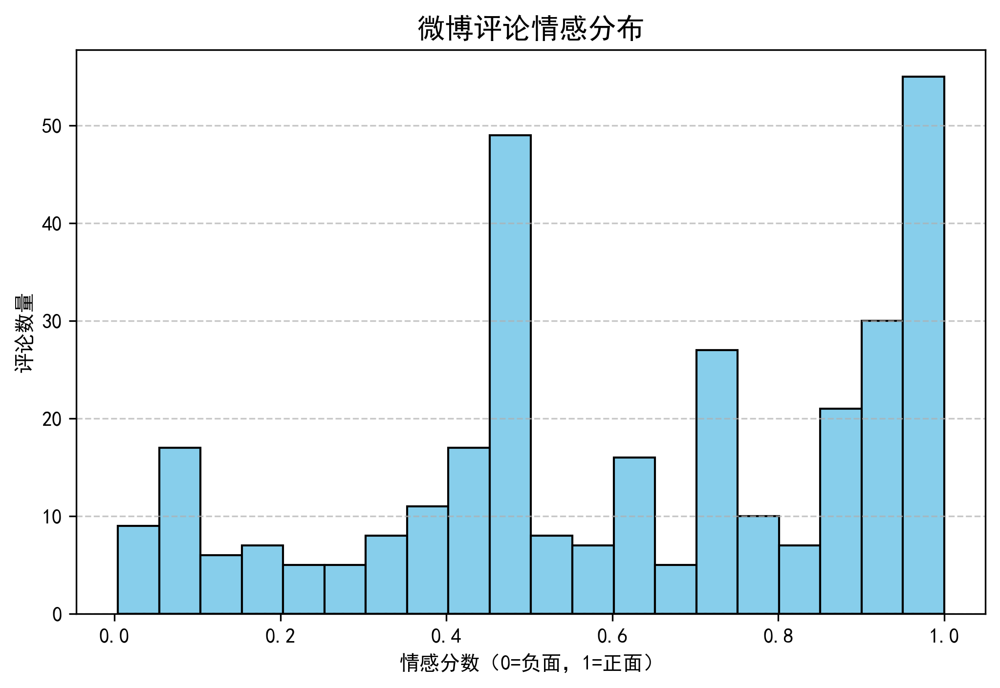
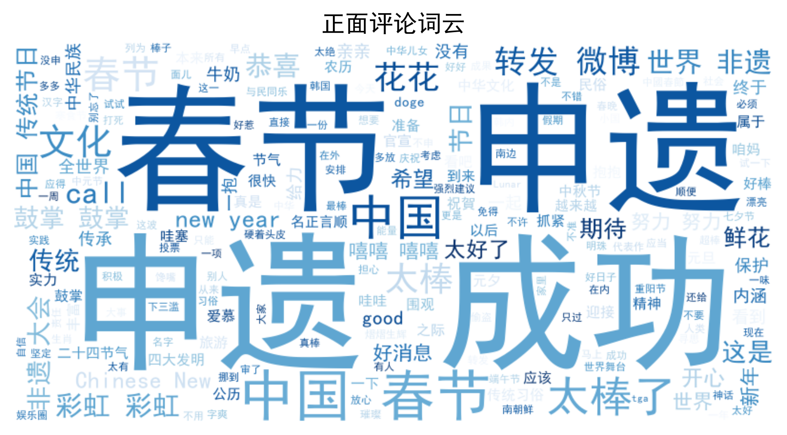
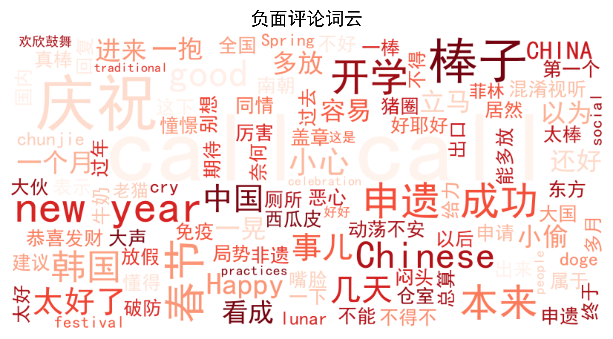

事件介绍
2024年12月5日，中国春节文化正式列入联合国教科文组织《人类非物质文化遗产代表作名录》，申遗项目名称为“春节——中国人庆祝传统新年的社会实践”。这一成就标志着春节文化在国际上获得重要认可。


积极面：
- 文化软实力增强——提升中国在国际文化领域的话语权。
- 民族自豪感提升——增强公众对传统文化的认同感，推动非遗保护社会共识。
- 国际文化合作深化——春节作为文化桥梁，促进中外文化与经济交流。
潜在风险：
- 误解与争议——部分国际评论可能将春节文化传播视为“文化输出”，引发“文化霸权化”质疑。
- 执行压力——如何保持春节文化的真实性，并应对商业化冲击，仍是未来的挑战。
词云图展示
引入哈工大停用词表去掉停用词并使用 Python 的 jieba 分词，后计算词频生成词云图。

情感分析
通过使用SnowNLP计算评论的情感分数，后用 Matplotlib绘制情感分布直方图，并用 WordCloud生成正面 & 负面评论的词云。如下图所示：
观察情感分布直方图可发现，评论数量在情感分数为 1.0 时达到最高，高于50，说明正面情感的评论数量最多。情感分数在0.0 - 0.2 区间评论数量较少。
故评论的情感倾向整体偏正面，高情感分数（接近 1）的评论数量显著多于低情感分数（接近 0）的评论数量，说明大部分用户在微博上表达的是积极情感。
正面评论词云分析
高频词汇：“春节”“申遗”“成功”“太棒”“赞”“转发”等词汇非常突出，表明网友对春节申遗成功的高度认可与积极庆祝，还包含“文化”“传统”“中国”等词，体现出对中华文化传承与弘扬的关注和自豪。
情感倾向：充满喜悦、自豪等积极情感，如“花花”“嘻嘻”“哇塞”等词展现出网友兴奋、开心的状态。
负面评论词云分析
高频词汇：“棒子”“韩国”等词较突出，可能反映出部分网友针对其他国家与中国春节文化相关争议的负面情绪；同时也有“庆祝”“成功”等词，说明负面评论并非完全针对春节申遗成功本身。
情感倾向：包含一些不满、争议性的情绪，可能源于对其他国家文化争抢行为的反感等。
